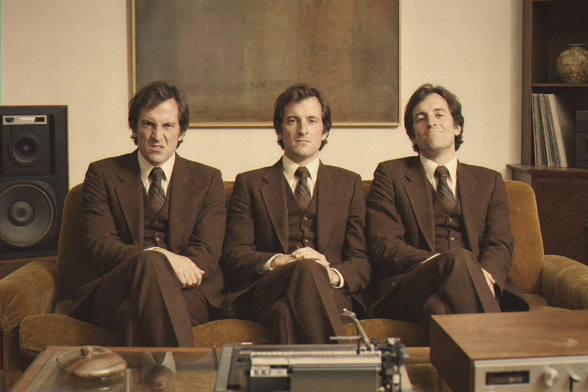
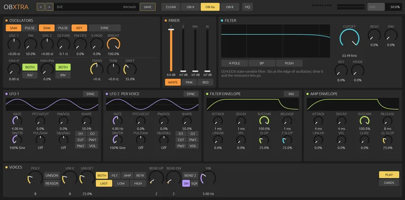

Three brothers. Same family. Very different tempers.

The OB-X was the loud one. The OB-Xa grew up a little smoother. The OB-8 learned some manners and kept its muscles. Together they defined the sound of a decade of arenas.
OBXTRA models the voice boards of all three, each from its own service manual. They run on OB-Xf's proven open-source engine, presets included.
Choose a brother and the character changes, as it did on the real machines. All three are wide, warm and impossible to bury in a mix.

One instrument, three voice boards.
OBXTRA
Oberheim OB-X, OB-Xa and OB-8 voice boards in one instrument.
Open source · AU · VST3 · CLAP
Jardim SonoroOpen-source audio research
Download: jardimsonoro.com/audioSource & issues: github.com/nagualcode/obxtra
Synthesizers02